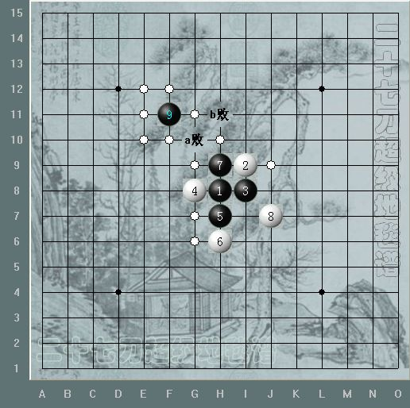

九宫八卦破解地毯
首页
定式及研究
#1 九宫八卦破解地毯 作者：二十七刀 发表时间：2008-10-23 23:45:30
九宫八卦破解地毯

 oh-yeah~.rar
oh-yeah~.rar
［ 有志青年 于 2009-2-3 20:13:39 时奖励此帖[金币加 20 威望加1］
#2 Re:九宫八卦破解地毯 作者：gerbo 发表时间：2008-10-24 8:31:52
则
#3 Re:九宫八卦破解地毯 作者：gerbo 发表时间：2008-10-24 8:33:50
这个我这几天也准备做下的，呵呵，真是没想到正好有棋友发了，表示感谢。但我还是得自己再研究下，也算省下了一点功夫，感谢~~
#4 Re:九宫八卦破解地毯 作者：夏百萧 发表时间：2008-10-24 10:46:53
什么啊 看不明白
#5 Re:九宫八卦破解地毯 作者：等待 发表时间：2008-10-24 12:33:21
支持下
#6 Re:九宫八卦破解地毯 作者：冷面孤煞 发表时间：2008-10-24 17:34:21
能不能发有a点和c点的地毯上来啊
#7 Re:九宫八卦破解地毯 作者：二十七刀 发表时间：2008-10-26 21:22:47
在图片下面下载
#8 Re:九宫八卦破解地毯 作者：我把自己丢拉 发表时间：2008-10-26 21:54:53
好东西,收了,谢谢哈
#9 Re:九宫八卦破解地毯 作者：gerbo 发表时间：2008-12-14 17:24:29
=======上图对应的爱五子棋谱代码如下，以便你拆解：========
h8h7i8i9g8f8h9g10j6
====================================================== 这个9如何了，呵呵，慢慢来，天元子的文章都看过，只是没系统的整理，还有上图按也需要复习下了，现在开始做功课。。
#10 Re:九宫八卦破解地毯 作者：棋谈人生 发表时间：2008-12-26 17:39:45
谢谢 学习 辛苦了
#11 Re:九宫八卦破解地毯 作者：叶灏 发表时间：2009-1-18 6:56:24
好东西,谢谢!
#12 Re:九宫八卦破解地毯 作者：天涯蒙 发表时间：2009-3-15 17:22:34
貌似不是很全面啊！云月被防几步就没有了，而且还没出现胜势`
#13 Re:九宫八卦破解地毯 作者：董明 发表时间：2011-6-14 17:36:19
没有内容，骗人不好把
#14 Re:九宫八卦破解地毯 作者：爱棋的猪 发表时间：2011-12-11 15:38:46
白点代表什么子的？
#15 Re:九宫八卦破解地毯 作者：絮雪朝阳 发表时间：2012-8-1 15:58:27
不错，辛苦了
#16 Re:二十七刀【==九宫八卦破解地毯==】 作者：不在为发有 发表时间：2013-2-10 11:26:23
谢谢分享